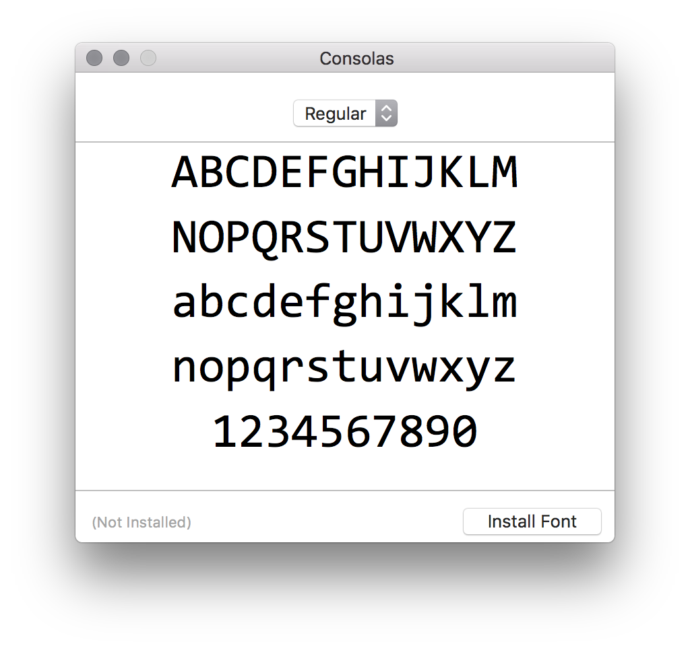

Install and use consolas font, my favorite from Windows world on macOS.
TL;DR
Download Consolas.ttf font file from this Github repo. Add to your system Font Book by opening Consolas.ttf font file and clicking Install Font. 
Why
I’m currently working on projects and primarily using C#.
When I get used to the default font in Visual Studio, it becomes very readable to me. So after I’m home and hacking on my MacBook, I really wish I could use that font on macOS, too.
I searched online and found this blog. It shows a script that extracts the font files from a Microsoft’s free product with cabextract tool.
# brew is a part of Mac OS X package manager called Homebrew (http://brew.sh/). |
Well, I believe someone already did that and by chance posted online (Shhh, I know it is licensed). Luckily I find it in someone’s public repo on Github, and voila! I have it on my macOS.
How it looks like
On Visual Studio 2017 for Mac
On Terminal
On Atom